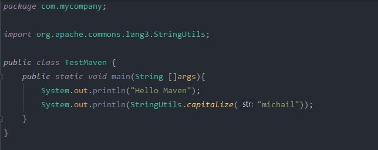

ΔΩΡΕΑΝ ΜΑΘΗΜΑΤΑ APACHE MAVEN
Στην σημερινή δωρεάν ενότητα Apache Maven, θα δούμε πως μπορούμε να προσθέσουμε
καινούργιες βιβλιοθήκες στο project μας (ονομάζεται dependency management)
και πως αυτή η διαδικασία συνδέεται με όλα όσα έχουμε αναφέρει μέχρι τώρα
στις προηγούμενες ενότητες.
Κάθε Java Project που θα δημιουργήσετε, αργά ή γρήγορα θα χρειαστεί κάποιες
εξωτερικές βιβλιοθήκες για να λειτουργήσει σωστά. Για παράδειγμα, ίσως χρειαστεί
το jar της MySQL ή της PostgreSQL για να το χρησιμοποιήσει σαν driver για να ενωθεί
στην βάση και να διαβάσει ή να γράψει δεδομένα. Πως προσθέτουμε ένα καινούργιο jar
στο POM έτσι ώστε να μπορέσει το Maven να το κατεβάσει και να το ενσωματώσει στο project μας?
Τώρα που γνωρίζεται περισσότερες λεπτομέρειες για το πως δημιουργούμε, χτίζουμε και εκτελούμε
ένα Java Maven Project μπορούμε να προσθέσουμε κάποιες έξτρα πληροφορίες για την λειτουργία του POM.
Όπως ήδη έχουμε αναφέρει, το POM (Project Object Model) είναι η ταυτότητα
του κάθε Maven project γιατί μέσα στο xml αρχείο του ορίζονται όλα τα απαραίτητα
στοιχεία που χαρακτηρίζουν το project. Με απλά λόγια, χωρίς POM δεν μπορεί να υπάρξει
project. Όμως, μέχρι τώρα, έχουμε δει μόνο ένα πολύ μικρό αριθμό των δυνατοτήτων και
χρήσης του POM. Γενικότερα, το POM μπορεί να περιέχει στοιχεία που να προσδιορίζουν
τις εξής ιδιότητες του project:
- Project information – Αυτά είναι στοιχεία του POM που μας
προσφέρουν πληροφορίες για το project όπως το όνομα του project, τον οργανισμό,
την ομάδα των προγραμματιστών που δημιούργησαν το project, κτλ.
- POM relationships - Σε μεγάλα project συνήθως διαιρούμε τα actions
του project σε μικρότερα modules. Στο POM μπορούμε να αναφέρουμε τα modules από
τα οποία εξαρτάται το project μας όπως και κληρονομικότητες από άλλα POMs.
- Build settings – Μπορούμε να ορίσουμε εμείς την τοποθεσία των
φακέλων τους οποίους χρησιμοποιεί το Apache Maven για σκοπούς όπως να διαβάσει
αρχεία που περιέχουν test files ή source code αλλά και για να γράψει το
αποτέλεσμα ενός report.
- Build environment – Μέσα στο POM αρχείο μπορούμε να ορίσουμε διάφορα
profiles ανάλογα με το αν δημιουργούμε ένα project για development, testing
ή production περιβάλλον.
Στο απλό project το οποίο έχουμε δημιουργήσει, είχαμε δηλώσει
στο pom.xml το groupId, artifactId, και version
του project μας.
Αυτά τα τρία στοιχεία μαζί ονομάζονται coordinates. Τα Maven coordinates είναι
ένα σετ από μοναδικά στοιχεία που βοηθάνε το Apache Maven να ξεχωρίζει με
επιτυχία ένα project, ένα dependency ή ένα plugin. Τα συγκεκριμένα στοιχεία,
που είναι και τα μοναδικά στο project μας μέχρι τώρα, ορίζουν την μοναδικότητα
του project όταν αυτό αποθηκευτεί στο local repository μετά την εκτέλεση της
εντολής install. Το που βρίσκεται αυτό το local repository και που αποθηκεύεται
το project το δείξαμε σε προηγούμενες ενότητες. Τα maven coordinates όμως,
δηλαδή το groupId, artifactId και version, θα τα χρειαστούμε για να δηλώσουμε
εξωτερικές βιβλιοθήκες. Χρειάζονται και τα τρία στοιχεία έτσι ώστε να ξέρει
ακριβώς το Maven ποια έκδοση και ποια βιβλιοθήκη θα χρειαστεί να κατεβάσει
αποφεύγοντας οποιαδήποτε σύγχυση ή λάθος αν πολλαπλές εξωτερικές βιβλιοθήκες
χρειάζονται για το project.
To modelVersion που υποστηρίζει το Maven είναι το 4.0.0. Το maven,
για να είναι σίγουρο ότι είναι σωστά δομημένο και τα στοιχεία του γράφονται
στην σωστή σειρά, εφαρμόζει στο POM κανόνες με την μορφή του maven-4.0.0.xsd αρχείου.
Μάλιστα αν πατήσετε Ctrl και μετά κάνετε κλικ επάνω στο link του xsd αρχείου,
θα μπορείτε να δείτε το περιεχόμενο του. Δεν θα χρειαστεί να το αλλάξετε αυτό
ποτέ εσείς. Απλά εξηγούμε όλα τα στοιχεία που υπάρχουν στο POM αρχείο και πρέπει
να καταλάβουμε το πως είναι δομημένο έτσι ώστε να δηλώσουμε σωστά το
dependency που χρειαζόμαστε.
Με όλη την θεωρία που γνωρίζουμε μέχρι τώρα θα μπορούσαμε να αντιπροσωπεύσουμε
την λειτουργία του Apache Maven με την εξής εικόνα:
Κάθε Maven project λοιπόν περιέχει ένα POM αρχείο, που ορίζει κάθε πτυχή του project.
Το Maven χρησιμοποιεί το POM για να αποφασίσει για τις ενέργειες που θα εκτελέσει
και τα αρχεία που θα δημιουργήσει. Τα dependencies, που είναι οι βιβλιοθήκες που
χρειάζεται, αρχικά τις ψάχνει στο local repository και μετά στο central.
Είναι πιθανόν να έχει οριστεί και κάποιο remote repository
(ίσως κάποιος server μέσα στην εταιρεία) τον οποίο θα ψάξει
να βρει. Για τα repositories θα μιλήσουμε σε μελλοντική ενότητα.
Για τώρα, ας δούμε πως μπορούμε στο project μας να προσθέσουμε
ένα καινούργιο dependency.
Ας υποθέσουμε, ότι θέλουμε να προσθέσουμε το jar με το όνομα Commons Lang από την Apache
(https://commons.apache.org/proper/commons-lang/) .
Το συγκεκριμένο jar περιέχει java μεθόδους που μας δίνουν
έξτρα δυνατότητες όπως να διαχειριστούμε καλύτερα ένα String,
να κάνουμε υπολογισμούς, ή ακόμα να ορίσουμε ημερομηνίες με καλύτερο
τρόπο από αυτό που μας προσφέρει η εγκατάσταση της Java. Αυτό το jar όμως
δεν υπάρχει στο local repository του υπολογιστή μας οπότε το Maven πρέπει
να ψάξει στο απομακρυσμένο repository του Maven για να το βρει και να το κατεβάσει.
Επειδή έχουμε δημιουργήσει ένα Java Maven Project θα πρέπει να βρούμε
ποια είναι τα coordinates για να τα προσθέσουμε στο POM αρχείο του project μας.
Αν πάμε λοιπόν στο MVNRepository
(https://mvnrepository.com/artifact/org.apache.commons/commons-lang3/3.9 )
και κάνουμε αναζήτηση για το Commons Lang θα πάρουμε αυτό που
ψάχνουμε: το groupId, το artifactId και το version.
Για να μπορέσει το POM να αναγνωρίσει τα dependencies θα πρέπει να δημιουργήσουμε
μια καινούργια ενότητα που θα ξεκινάει και θα κλείνει με το tag dependencies.
Μέσα στην ενότητα dependencies ορίζουμε κάθε ένα dependency ξεχωριστά. Στην
ουσία αντιγράφουμε όλο το κείμενο που είναι γραμμένο μέσα στο πλαίσιο όπως μας
το δίνει το MVNRepository. To POM αρχείο τώρα πρέπει να έχει την εξής μορφή:
pom.xml
<?xml version="1.0" encoding="UTF-8"?>
<project xmlns="http://maven.apache.org/POM/4.0.0"
xmlns:xsi="http://www.w3.org/2001/XMLSchema-instance"
xsi:schemaLocation="http://maven.apache.org/POM/4.0.0 http://maven.apache.org/xsd/maven-4.0.0.xsd">
<modelVersion>4.0.0</modelVersion>
<groupId>com.mycompany</groupId>
<artifactId>HelloMaven</artifactId>
<version>1.0-SNAPSHOT</version>
<properties>
<maven.compiler.target>11</maven.compiler.target>
<maven.compiler.source>11</maven.compiler.source>
</properties>
<dependencies>
<dependency>
<groupId>org.apache.commons</groupId>
<artifactId>commons-lang3</artifactId>
<version>3.9</version>
</dependency>
</dependencies>
</project>
Για ανανεώσουμε το project μας θα πρέπει να τρέξουμε την γνωστή εντολή mvn clean install
η οποία θα καθαρίσει το προηγούμενο jar από το local repository,
θα κατεβάσει το common-lang3 jar, θα το συμπεριλάβει στο project
και θα to χτίσει ξανά.
Αν προσέξουμε τώρα στις External Libraries του project, θα δούμε ότι υπάρχει μια
επιπλέον βιβλιοθήκη εκτός από την Java 11.
Ας αλλάξουμε τον κώδικα μας τώρα, έτσι ώστε να καλέσουμε την
βιβλιοθήκη που κατεβάσαμε και να δούμε την χρησιμότητα της.

Τρέχουμε πάλι την εντολή mvn clean install και μετά την Run από το κύριο μενού.
Το αποτέλεσμα είναι να μας εμφανίσει το όνομα με το πρώτο γράμμα κεφαλαίο.
Φυσικά το jar περιέχει πολλές χρήσιμες μεθόδους, αλλά εμείς χρησιμοποιήσαμε
το πιο απλό παράδειγμα για να συγκεντρωθούμε περισσότερο στην διαδικασία
πρόσθεσης ενός dependency στο project μας παρά στο να γράψουμε ένα πιο
ενδιαφέρον java πρόγραμμα.
Πριν κλείσουμε την ενότητα, θα ήθελα να αναφερθούμε σε δύο σημεία όσον αφορά
το IntelliJ. Το πρώτο είναι η αποφυγή της επιλογής Build από το κύριο μενού.
Το Build χτίζει το project με βάση τα στάνταρντ του IntelliJ.
Είναι προτιμότερο να εκτελούμε τις Maven εντολές όπως τις έχουμε μάθει
έτσι ώστε να είμαστε σίγουροι ότι το project μας χτίζεται σωστά. Το δεύτερο
σημείο είναι η ενεργοποίηση της επιλογήςImport Maven Projects automatically
που μπορείτε να την βρείτε πηγαίνοντας στοFile → Settings → Build, Execution, Deployment → Build tools → Maven → Importing
Όταν αυτή η επιλογή είναι ενεργοποιημένη συγχρονίζεται αυτόματα το project
με το IntelliJ κάθε φορά που γίνεται μια αλλαγή στο POM αρχείο.
Michail Kassapoglou Admin
Γεια σας, είμαι ο Μιχάλης Κασάπογλου και θα σας διδάξω με τον ποιο απλό
τρόπο να χρησιμοποιείτε το Apache Maven για την δημιουργία όλων των Java και Java EE project σας. Ασχολούμαι με την τεχνική εκπαίδευση
σε διάφορες πλατφόρμες, λειτουργικά συστήματα και γλώσσες προγραμματισμού
πάνω από 20 έτη. Κατέχω έναν αρκετά μεγάλο αριθμό πιστοποιήσεων Microsoft και Oracle
και σαν Τraining Lead στην Intrasoft έχω την δυνατότητα να αναβαθμίζω συνεχώς
τις γνώσεις μου και να έχω άμεση επαφή με αληθινά projects και εξειδικευμένες μεθόδους
ανάπτυξης εφαρμογών που έχουν υψηλές απαιτήσεις.
Για τυχόν ερωτήσεις σας μπορείτε να επικοινωνήσετε μαζί μου
στο Michail.Kassapoglou@gmail.com
Σας ευχαριστώ που επισκεφτήκατε την ιστοσελίδα μου.